Introduction to GC | June 2018

garbage collection
automatic memory management
allocate space for new objects
identify live objects
reclaim the space occupied by dead objects
static memory allocation
allocated when the program starts
the size is fixed
static int value;
automatic memory allocation
is allocated when the compound statement containing the declaration is entered
is freed when that compound statement is exited
int sum(int num1, int num2) {
return num1 + num2;
}
dynamic memory allocation
allows the size to be determined at run time
the size is not fixed
objects are stored in the heap
int main() {
//do stuff
int* mem = malloc(1024);
//more stuff
}
explicit deallocation
dangling pointer
memory leak
int main() {
//do stuff
int* mem = malloc(1024);
//more stuff
free(mem)
//even more stuff
}
dangling pointer
memory is freed prematurely
if the program subsequently follows it, the result is unpredictable
memory leak
the programmer may fail to free an object no longer required by the program
more problematic in concurrent programming
automatic memory management
simplifies coding
uncouples the problem of memory management
prevents dangling pointers being created
reduces the chance of memory leaks
requires additional resources
garbage collector
created in 1959 for Lisp
mark-sweep
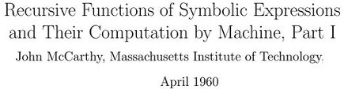

allocation
strategies
secuential allocation
free-list allocation
secuential allocation
uses a large free chunk of memory
a free pointer and a limit pointer
bump the pointer allocation
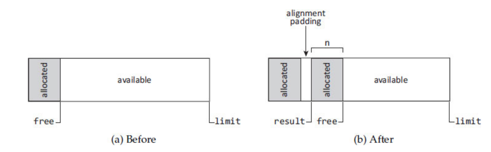
free-list allocation
a data structure records the location and size of free cells of memory
-
selection policies:
first-fit
next-fit
best-fit
first-fit
uses the first cell it finds that can satisfy the request
Obj < cell -> splits the cell and returns the remainder to list
the remainder usually has a size constraint
small remainder cells accumulate near the front of the list, slowing down allocations
next-fit
starts from the point in the list where the last search succeeded
reduce the need to iterate repeatedly past the small cells at the head of the list
poor locality
best-fit
finds the cell whose size most closely matches the request
avoids splitting large cells unnecessarily
gives relatively low wasted space in spite of its bad worst-case performance
segregated-fits allocation
uses multiple free-lists whose members are segregated by size to speed allocation
when it splits a cell, the remainder is included in a smaller list
big bag of pages (BiBoP) or splitting
concurrency
needs to use atomic operations or locks
could be a bottleneck
per thread memory allocation
schemes
reference counting
mark-sweep
mark-compact
copying
terminology
collector
mutator
mutator roots
terminology
parallel
-
concurrent
concurrent/incremental
atomic operations
safe point
reference counting
keeps track of the object references
reclaims memory once the count becomes zero
reference counting
Memory management costs are distributed throughout the computation
the memory can be immediately reclaimed
it may continue to operate satisfactorily in a nearly full heap
atomic actions
overhead on the mutator
circular structures
reference counting

deferred reference counting
the majority of stores are made into local variables, which are kept on the stack
checks references stored in heap objects only
uses a zero count table (ZCT)
coalesced reference counting
mutation events are coalesced if they generate only a single mutation event
several states of the object are coalesced to just two
a log is used to store modifications
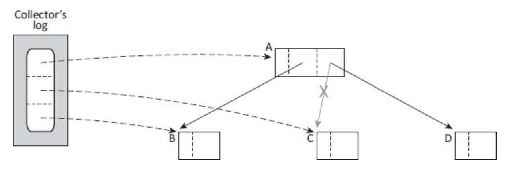
circular structures
combine reference counting with occasional, backup tracing collection
trial deletion
tracing garbage collectors
tracing garbage collectors
live objects can be found by iteratively tracing all references and subsequent references from mutator roots
handle circular structures
tricolour abstraction
partitions the object graph into black (presumed live) and white (possibly dead) objects
when a node is first encountered during tracing it is coloured grey until scanned
at the end of each iteration of the marking loop, there are no references from black to white objects
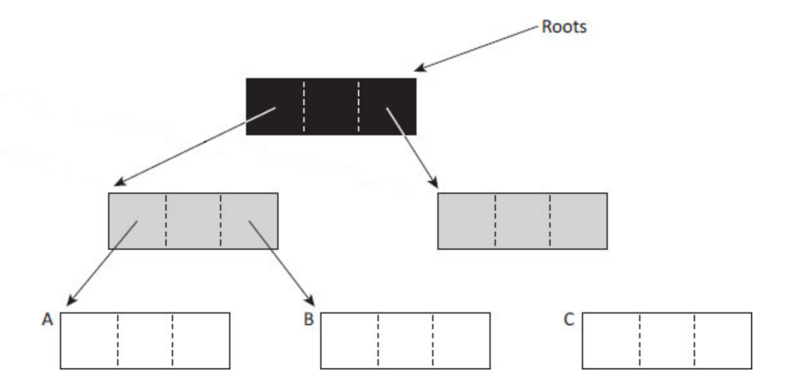
invariants
-
weak invariant:
white objects pointed to by a black object are grey protected
-
strong invariant:
there are no pointers from black objects to white objects
mutators
-
grey mutator:
its roots are still to be traced, or its roots have been scanned but need to be rescanned
-
black mutator:
its roots have been traced, and will not be scanned again
incremental update solutions
treat an object as live (non-white) if a pointer to it is ever inserted behind the wavefront (into a black object)
preserve the strong invariant
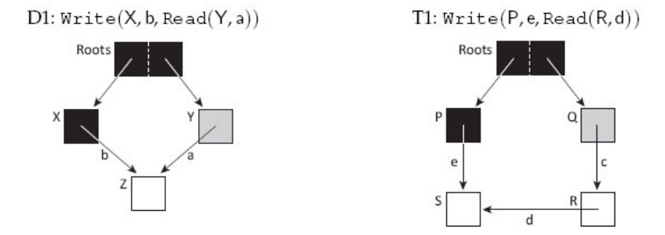
snapshot-at-the-beginning solutions
inform the collector when the mutator deletes a white pointer from a grey or white object
preserve the weak invariant
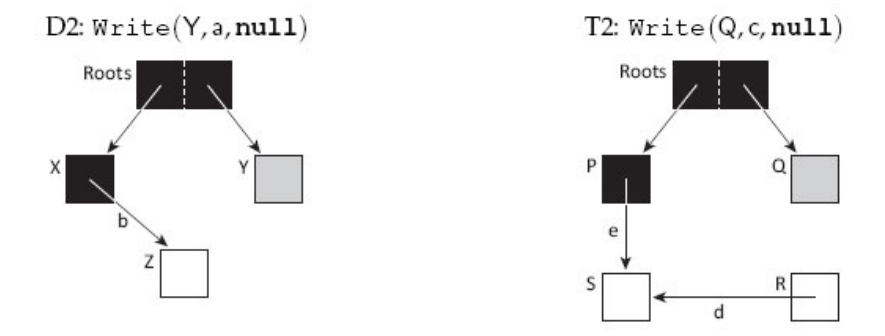
grey mutator barriers
preserve the strong invariant by using an insertion barrier
because the mutator is grey they do not need a read barrier
grey mutator barriers
atomic Write(src, i, ref):
src[i] ← ref
if isBlack(src)
if isWhite(ref)
revert(src)
atomic Write(src, i, ref):
src[i] ← ref
if isBlack(src)
shade(ref)
black mutator barriers
maintain the strong invariant using a read barrier to prevent the mutator from acquiring white pointers
use a deletion barrier on pointer writes into the heap to preserve the weak invariant
black mutator barriers
atomic Read(src, i):
ref ← src[i]
if isGrey(src)
ref ← shade(ref)
return ref
atomic Read(src, i):
if isGrey(src)
scan(src)
return src[i]
atomic Write(src, i, ref):
if isGrey(src) || isWhite(src)
shade(src[i])
src[i] ← ref
mark-sweep garbage collectors
marking
the collector retrieves an object from the work list
sets the mark in the header or a bitmap
adds object's children to the work list
sweeping
the collector sweeps the heap linearly
frees unmarked nodes
resets the mark bits of marked nodes
mark-sweep

parallel marking
thread-local work list
-
idle threads adquire work:
global list
another thread's stealable work queue
parallel sweeping
partition the heap into contiguous blocks
lazy sweeping
concurrent marking and sweeping
-
at the completion of the marking phase:
all white objects are recoloured purple
all black objects are recoloured white
sweeping collects only purple objects
on-the-fly collection
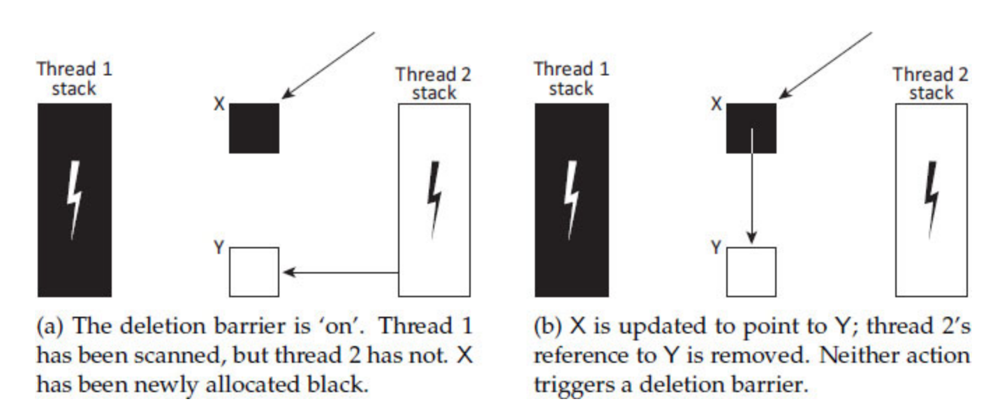
on-the-fly collection
never stops the mutator threads all at once
prompts each mutator thread asynchronously, one-by-one, to halt gracefully at some convenient point
Doligez-Leroy-Gonthier
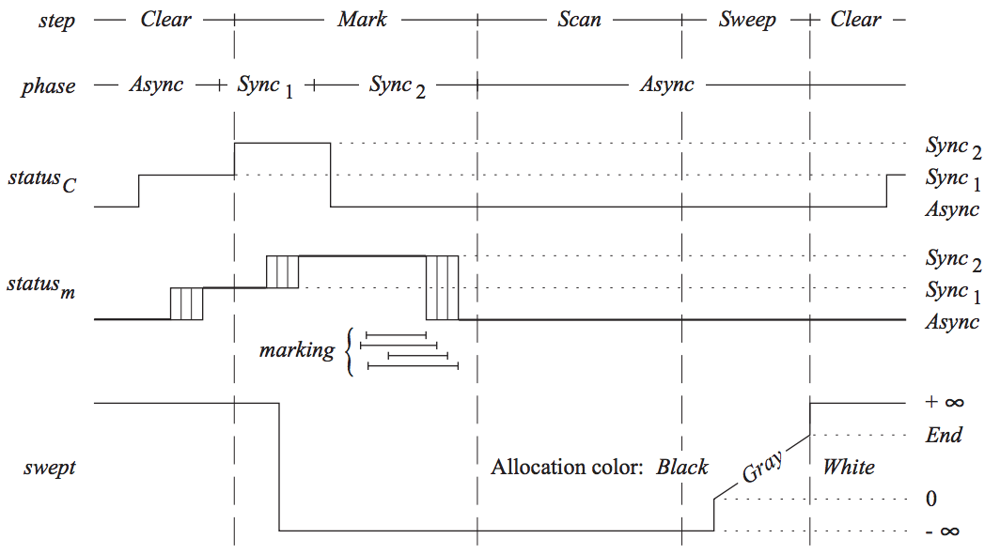
Doligez-Leroy-Gonthier
the collector sets its status to Sync1
the mutator threads, via soft handshakes, update their own status
-
the threads start using a write barrier
Write(src, i, new):
old ← src[i]
shade(old)
shade(new)
src[i] ← new
Doligez-Leroy-Gonthier
once all of the mutators have acknowledged the Sync1 handshake the collector moves to phase Sync2
all mutator threads have completed any unmonitored atomic allocation or write in Async before transitioning to Sync1
Doligez-Leroy-Gonthier
The collector can then move into the Async phase
each mutator thread acknowledges the Async handshake by scanning its roots for the collector
the mutators start using another write barrier
Write(src, i, new):
old ← src[i]
if not isBlack(old)
shade(old)
src[i] ← new
Doligez-Leroy-Gonthier
commences the sweeping phase
the mutators allocate white if allocation from memory already swept
allocate black if it wasn't already swept
allocate grey if at the point where is currently sweeping
mark-sweep cons
fragmentation
don't allow fast, sequential allocation
mark-compact garbage collectors
phases
mark
at least one compacting phase
object rearrangement
arbitrary
linearising
sliding
two finger algorithm
best suited to regions containing objects of a fixed size
awful locality
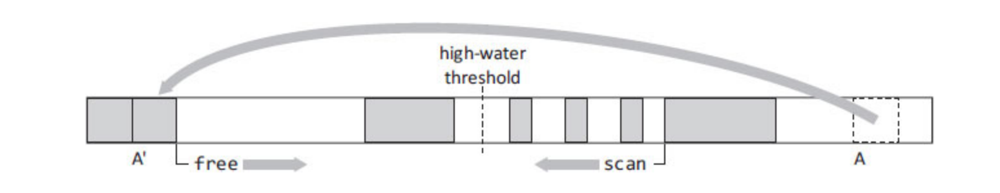
lisp 2
-
makes three passes over the heap:
computes the location to which each live object will be moved
updates references in marked objects
moves each live object to its new destination
compressor
one pass over the heap (plus marking)
uses a markbit vector as input
calculates an auxiliary offset table
forwarding addresses are calculated on the fly
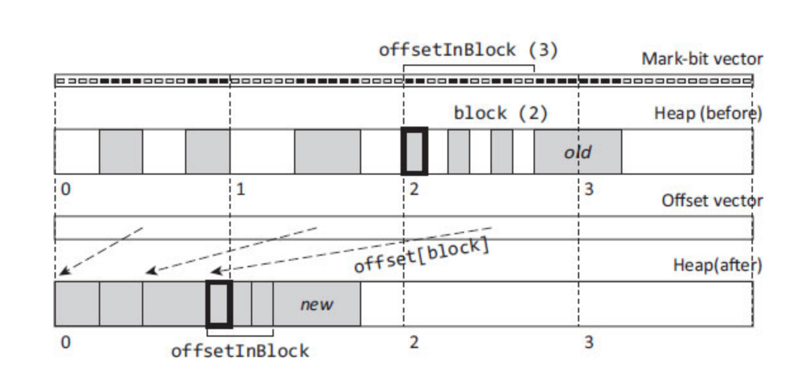
copying garbage collectors
copying
uses two separately defined address spaces: from-space and to-space
when all the live objects are copied from one space to the other, the entire from-space is reclaimed
fragmentation is eliminated
they are usually stop-the-world
Cheney's copying algorithm
roots are copied to the new space
uses two pointers: scan and free
scans the objects between those pointers and copies every object referenced
the collection is complete when the scan pointer catches up with the free pointer
Breadth-first copying affects locality
Moon's copying algorithm
the to-space is divided in blocks
smaintains two scan pointers
copies in hierarchical order
may scan objects twice with the secondary scan pointer
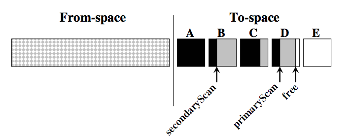
Halstead’s parallel copying
creates a to-space blocks for each processor
threads compete only when copying or creating forwarding pointers
poor load balancing
breadth-first order
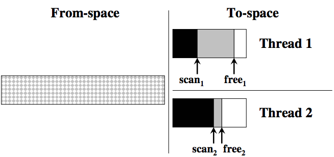
Tick’s parallel copying
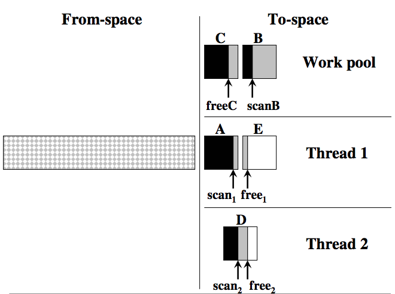
Tick’s parallel copying
overpartition: creates m to-space blocks for n processor (m > n)
uses a work pool for load balancing
synchronization on from-space and work pool